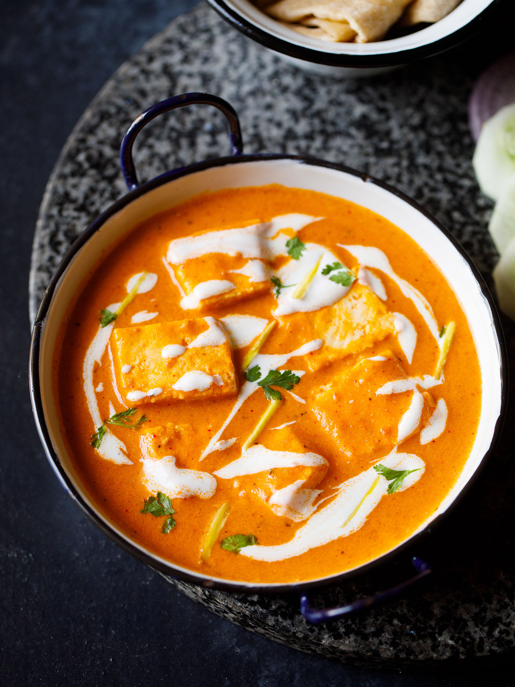

Paneer Butter Masala

Description
Paneer makhani (also called paneer butter masala) is a slightly sweet creamy dish of paneer, originating from the Indian subcontinent, in which the gravy is prepared usually with butter (makhan), tomatoes, cashews or cream. Spices such as red chili powder and garam masala are also used to prepare this gravy.
A survey found that paneer butter masala was one of the top five foods ordered in India.
Ingredients
- Ripe red juicy tomatoes
- Cashews
- Cream
- Butter
- Paneer
- Spices & herbs
Steps
- Soak 18 to 20 cashews in ⅓ cup hot water for 20 to 30 minutes.
- When the cashews are soaking, you can prep the other ingredients like chopping tomatoes, chopping and preparing the ginger-garlic paste, slicing paneer etc
- Crush 1-inch ginger + 3 to 4 medium-sized garlic to a paste in a mortar pestle to a semi-fine or fine paste. Keep aside. Don’t add any water while crushing ginger & garlic.
- Blend to a smooth paste without any tiny bits or chunks of cashews. Remove the cashew paste in a bowl and set aside.
- Make Tomato Gravy
- Add Cashew Paste
- Mix the water very well with the tomato-cashew makhani masala. If there are lumps of the tomato-cashew masala, then break with a spoon. You can even use a wired whisk for mixing.
- Serve Paneer Butter Masala hot garnished with 1 to 2 tablespoons of chopped coriander leaves (cilantro) and the remaining ginger julienne. You can also drizzle some cream or dot with butter while serving.